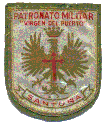

Me llamo Angel Hidalgo Torres y con domicilio en Logroño. Mi experiencia en el Patronato fué de un año (4º y reválida, no pude seguir ya que dejé un grupo de reválida y precisamente ese año no dejaban pasar a 5º). Me acuerdo mucho ya que tenía 16 años con Celadores como Daniel; compañeros externos como Cornejo, Collado, Jaso; interno como Jose María Soto Jimenez; del Apache etc.. Así mismo me acuerdo de aquellos partidos que haciamos contra los presos del Penal de Dueso; de la Señorita Africa; de las Marmotas; del agua corriente pero salada; del incendio en el pabellón y aquella gran nevada de 1968. Angel Hidalgo |
|---|